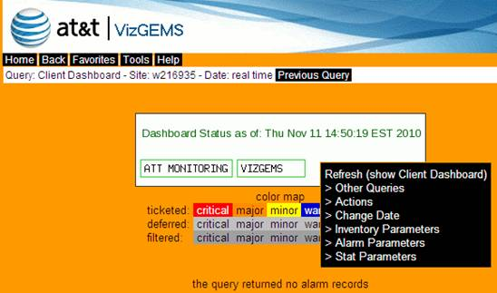
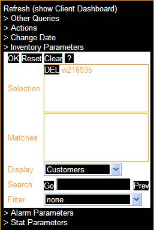
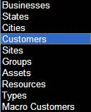
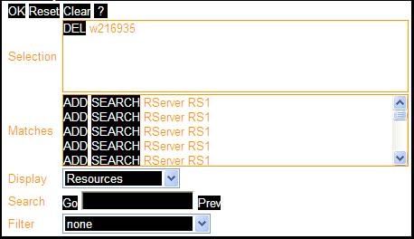

To display the Inventory Parameters option on the drop down menu, hover your mouse in a non-link area as shown below. Left clicking the mouse will display the following menu. Select the Inventory Parameters option.

Figure 8-6 Inventory Parameters
 
Use the Inventory Parameters screen to customize inventory details that are displayed in Visualizer®.
Select the inventory level you want to search on from the drop-down display list shown in the figure above, and click the Go button. Results will display in the Matches pane. Using the Prev button will revert to a previously selected search during the current session.
Move a specific match or matches to the Selection pane by clicking on the ADD button. You may also choose to drill down further by clicking on the SEARCH button next to any item in the Matches pane. You may remove individual items from the Selection pane by clicking on the DEL button.

The default filter is set to none but you may select assets with alarms only from the drop-down list.
The following actions are available:
Reset – drops any changes made by the user and reverts to the previously specified parameters for the current page.
Clear – removes all content from the Selection pane
OK – gathers the data entered, closes section, and reverts to the full drop-down menu.
? – provides online details about this parameter
Warning ! You must click OK in order to apply the entered values to the next query, then click any query you want to re-run based on current setting.